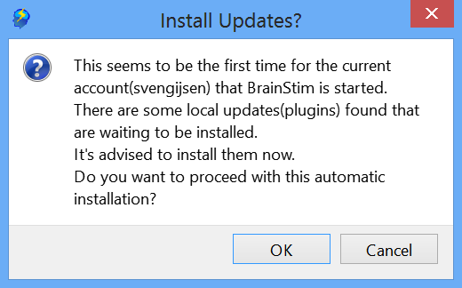
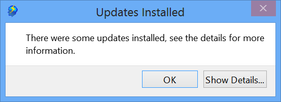
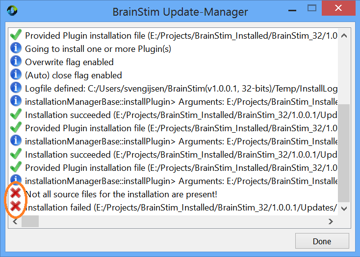

Document version: 1.0
Author(s): Sven Gijsen
Date: July 2015
BrainStim and all of its plugins can be updated using an separate tool called the Update Manager (UpdateMngr.exe). This tool can handle installation files to configure and perform automatic update installation(s). The tool is automatically installed in the same directory as the BrainStim executable (BrainStim.exe) and should not be moved elsewere. Executing the tool and performing a certain update might need administrative rights, if needed the tool will automatically try to elevate by requesting an administrative login.
The first time that BrainStim is started for each new user it automatically configures itself for the first usage by creating a BrainStim Configuration File. After this it will asks the user if it should perform an automatic update by parsing the installation files from the BrainStim Updates sub-directory inside the Main Program directory. This sub-directory can contain update installation files. These installation files in the BrainStim Updates sub-directory are stored there during the BrainStim installation and contain some additional plugin installations.

If you skip this step then
this question is never asked again and the plugins are not available for
the current user. An alternative for performing a automatic update again is by using the Manual Update
option inside the Settings Dialog. Sometimes a reboot of BrainStim is required after performing a
update, if needed then this is automatically requested to you. If the
installation succeeded you'll see a dialog like:

If something went wrong during the update then the BrainStim Update-Manager window remains visible and using the installation log list you can see what went wrong. This installation log is also saved to the Temp sub-directory of the BrainStim Main User directory.

There are several Installation file types for updates, these are:
| File type(extension) | Description |
|---|---|
| Ini (*.ini) | This installation configuration file contains the configuration steps of an update. Additional installation files are normally saved in the same directory, where these should be copied to is defined in this installation configuration file. |
| List (*.lst) | This List file can contain one or more reference to Ini or List file(s), thus this is an list of installation configuration files. |
| Zip (*.zip) | A compressed zip archive normall contains a directory with one or more sub-directories that can contain one of the above Installation configuration files and their additional installation files. This Zip format is handy when someone needs to combine multiple update installation inside one single archive. |